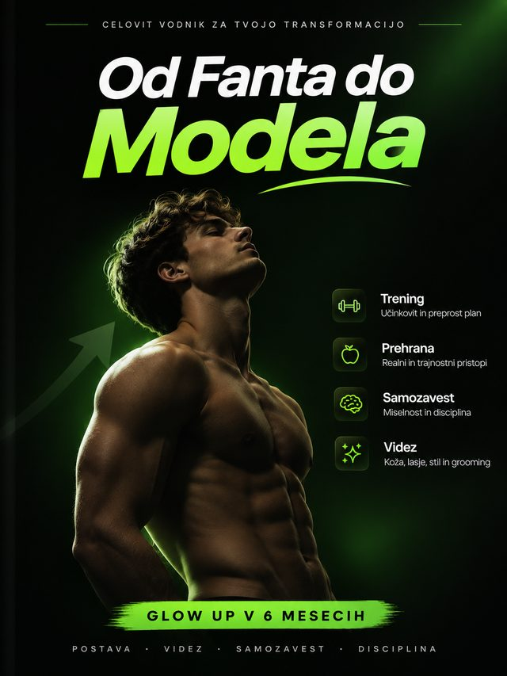

Ne veš, kje začeti
Na spletu je toliko nasvetov o treningu, prehrani in videzu, da hitro izgubiš pregled nad tem, kaj dejansko deluje.
Ne potrebuješ novega življenja. Potrebuješ načrt, da izboljšaš svoje.
Od boljše postave in urejenega videza do večje samozavesti. En pregleden digitalni vodič, ki ti pomaga narediti prvi korak in graditi navade naslednjih 6 mesecev.

Mogoče imaš motivacijo. Mogoče si že večkrat poskusil. Ampak brez jasnega načrta je težko ostati dosleden.
Ni ti treba spremeniti vsega naenkrat. Začni z enim jasnim korakom.
Na spletu je toliko nasvetov o treningu, prehrani in videzu, da hitro izgubiš pregled nad tem, kaj dejansko deluje.
Začneš z veliko energije, a brez oprijemljive tedenske strukture se po nekaj dneh vrneš k starim navadam.
Želiš izboljšati postavo, osebni stil in vsakodnevno urejenost, vendar ne veš, čemu dati prednost.
Veš, kaj bi rad dosegel, ampak potrebuješ preprost sistem, ki ga lahko realno vključiš v šolo, študij ali službo.
Od Fanta do Modela povezuje štiri ključna področja v enoten vodnik. Brez ekstremov in brez prazne teorije — samo jasne osnove, ki se seštevajo iz tedna v teden.
Zgradi rutino, s katero postopoma izboljšuješ moč, telesno pripravljenost, držo in postavo.
Nauči se sestavljati preproste obroke in graditi prehranske navade, ki jih lahko držiš dolgoročno.
Odkrij osnove nege kože, las, obraza in osebnega stila za urejen vsakodnevni vtis.
Gradi disciplino, izboljšuj govorico telesa ter postajaj bolj sproščen v komunikaciji.
Spodaj je 6 avtentičnih vzorčnih strani neposredno iz 94-stranskega PDF-ja. Vidiš lahko celotno strukturo, metodo in dizajn — ključni zaupni protokoli in celotni 24-tedenski načrt pa so zaščiteni z zaklepom.
| 00 Preden začneš | str. 4 |
| 01 Piramida glow upa | str. 7 |
| 02 Spanje | str. 11 |
| 03 Prehrana | str. 14 |
| 04 Telo in trening | str. 21 |
| 05 Koža | str. 28 |
| 06 Lasje | str. 34 |
| 07 Obraz in detajli | str. 40 |
| 08 Stil in oblačenje | str. 43 |
| 09 Vonj in higiena | str. 49 |
| 10 Drža in govorica telesa | str. 53 |
| 11 Samozavest in um | str. 56 |
| 12 Družabnost in komunikacija | str. 61 |
| 13 50 malih stvari | str. 65 |
| 14 6-mesečni načrt | str. 69 |
| 15 Napredek in pogoste napake | str. 73 |
| 16 30-dnevni zagon | str. 76 |
| 17 24-tedenski načrt | str. 80 |
| 18 Koliko stane glow up | str. 83 |
| 19 Pogosta vprašanja | str. 86 |
| 20 Priloge & Sledilnik | str. 90 |
»Konsistentnost premaga intenzivnost. Povprečen načrt, ki ga delaš 180 dni, premaga popoln načrt, ki ga opustiš po treh tednih.«
Približno 80 % vidne spremembe pride iz približno 20 % stvari: spanje, trening, prehrana, nega kože, frizura, drža in oblačila, ki ti prav pristajajo.
| Dan | Fokus | Primer vaj |
|---|---|---|
| Pon | Zgornji del 1 | Potisk s prsi, veslanje, ramena |
| Tor | Spodnji del | Počep, romunski dvig, izpadni korak |
| Sre | Počitek / hoja | Lahka hoja, raztezanje |
| Čet | Zgornji del 2 | Zgibe / pulldown, potisk nad glavo |
| Pet | Spodnji del + trebuh | Potisk z nogami, mrtvi dvig, plank |
| Sob/Ned | Prosto + hoja | 8.000 do 10.000 korakov na dan |
Prikaz prvih vaj z določenimi serijami in ponovitvami:
| Vaja | Serije × ponovitve |
|---|---|
| Potisk s prsi (ročke ali palica) | 3 × 6 do 10 |
| Veslanje (ročke ali kabel) | 3 × 8 do 12 |
| Čas | Korak | Namen |
|---|---|---|
| Zjutraj | 1. Nežno čistilo ali voda | Odstrani nočne ostanke |
| Zjutraj | 2. Vlažilna krema | Zaščiti kožno bariero |
| Zjutraj | 3. Zaščita pred soncem (SPF) | Najboljša preventiva staranja |
| Zvečer | 1. Čistilni gel | Odstrani pot in nečistoče |
| Zvečer | 2. Vlažilna krema | Regeneracija čez noč |
Izbira čistil in krem glede na to, ali je koža mastna, suha ali mešana:
| Mastna koža | Gelasto čistilo, lahka gel krema |
| Suha koža | Kremasto čistilo, bogatejša krema s ceramidi |
| Dan | Naloga dneva (samo 1 glavna naloga) |
|---|---|
| Dan 1 | Fotografije (spredaj, stran, zadaj, obraz). 3 cilji. |
| Dan 2 | Določi uro zbujanja. Jutranja svetloba 10 minut. |
| Dan 3 | Kupi osnovno rutino kože (čistilo, krema, SPF). |
| Dan 4 | Telefon izven postelje. Zasloni proč 30 min pred spanjem. |
| Dan 5 | Prvi trening ali 8.000 korakov. Zapiši začetno težo. |
| Dan 6 | Zamenjaj sladke pijače z vodo. |
| Dan 7 | Pregled prvega tedna: kaj je šlo dobro? |
Vsak dan prinese točno eno majhno akcijo, ki zgradi neustavljiv zagon:
| Dan 8 | Beleži obroke ves dan, brez spreminjanja. Samo opazuj. |
Natisni ali izpolnjuj v beležki: spremljanje ključnih meritev vsak mesec:
| Datum | Teža | Pas | Prsa | Počutje (1–10) |
|---|---|---|---|---|
| Začetek | ... kg | ... cm | ... cm | ... / 10 |
| 1. mesec | ... kg | ... cm | ... cm | ... / 10 |
| Navada | P | T | S | Č | P | S | N |
|---|---|---|---|---|---|---|---|
| Spanje 7–9h | ✓ | ✓ | ✓ | ✓ | ✓ | ✓ | ✓ |
| Voda & koraki | ✓ | ✓ | ✓ | ✓ | ✓ | ✓ | ✓ |
| Rutina kože | ✓ | ✓ | ✓ | ✓ | ✓ | ✓ | ✓ |
Hitri kontrolni seznami za trgovino in lekarno:
| Koža | Nežno čistilo, krema, SPF 30–50, balzam za ustnice |
| Higiena | Deodorant, zobna nitka, trimer, krema za roke |
Prikazani so avtentični izseki iz 94-stranskega uradnega PDF vodnika (delno zakriti zaradi zaščite vsebine). Berljivo na telefonu, tablici in računalniku.
Po uspešnem plačilu prejmeš 94-stranski digitalni vodič v PDF obliki, ki ga shraniš na telefon ali računalnik.
Prvi mesec postopoma uvajaš ključne navade po jasni začetni strukturi brez nepotrebnega stresa.
Sledi 6-mesečnemu programu v svojem tempu ter korak za korakom nadgrajuj postavo, videz in disciplino.
Ne gre za popolnost čez noč. Gre za občutek, da vsak teden narediš nekaj dobrega zase.
Vse, kar potrebuješ za strukturiran začetek, zbrano v enem digitalnem vodniku.
Enkratni nakup • Digitalni dostop po uspešnem plačilu
Če tukaj ne najdeš odgovora na svoje vprašanje, nam kadarkoli piši na info@odfantadomodela.si.
Prejmeš 94-stransko digitalno e-knjigo v PDF obliki Od Fanta do Modela. Vodič vsebuje 30-dnevni začetni program, 24-tedenski načrt preobrazbe ter poglavja za trening, prehrano, spanje, nego kože in las, osebni stil, govorico telesa in samozavest.
Ne nujno. Program je zasnovan tako, da lahko začneš z vadbo doma ali v fitnesu. Ključni cilj je vzpostavitev redne rutine in postopnega napredovanja.
Da. Namenjen je fantom in mlajšim moškim (približno 16–30 let), ki želijo jasen začetek brez zmede. S 30-dnevnim načrtom postopoma uvedeš osnovne navade in jih nato nadgrajuješ skozi 24 tednov.
Dnevne navade nege, urejenosti in prehrane vključiš v svoj obstoječi ritem v 15–20 minutah, za trening pa priporočamo 45–60 minut, 3- do 4-krat tedensko.
Seveda. Vodič je v univerzalni PDF obliki, zato ga brez težav odpreš in shraniš na vsakem telefonu (iPhone ali Android), tablici ali računalniku.
Da. Cena 19,99 € je enkratni nakup brez naročnin ali dodatnih stroškov.
Boljši občutek organiziranosti, urejenosti in energije lahko opaziš že v prvih tednih, ko urediš spanje, nego in ritem. Vidnejše spremembe postave in samozavesti pa so rezultat rednega večmesečnega dela.
Skoraj nič. Kot je podrobno razdelano v 18. poglavju e-knjige (»Koliko stane glow up«), so ključni stebri — spanje, hoja, zadostna hidracija, domači trening in osebna higiena — popolnoma brezplačni. Minimalni strošek za osnovno nego kože in obisk frizerja znaša okoli 50 € za 3 mesece. Pravilo knjige je: najprej navade, nato izdelki.
Da. V poglavjih o prehrani in pogostih vprašanjih sta ločeni jasni poti: suhi fantje prejmejo navodila za rahel nadzorovan presežek kalorij (+200 do 300 kcal) in progresivno vadbo za rast mišic, fantje z viškom kilogramov pa zmeren kalorični deficit (-300 do 500 kcal) z ohranjanjem mišičnega tonusa brez nevarnih stradanj.
Gre za digitalen produkt. Pred plačilom vpišeš svoj e-naslov, po uspešno zaključenem nakupu pa prejmeš dostop do PDF e-knjige.
Ne potrebuješ popolnega trenutka. Potrebuješ prvi korak in načrt, ki mu lahko slediš.
Začni svojo preobrazbo — 19,99 €